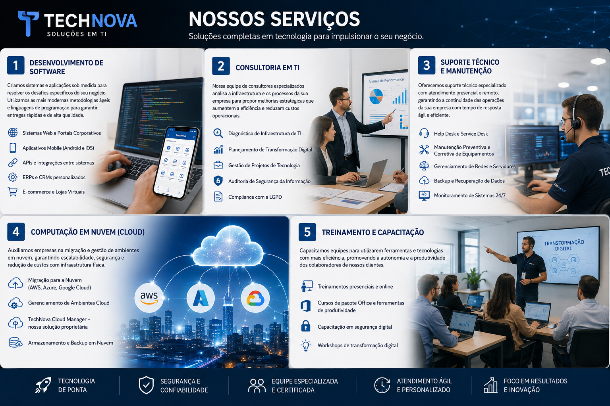

Na TechNova, oferecemos um portfólio completo de soluções em tecnologia da informação, desenvolvidas para atender às necessidades específicas de cada cliente. Conheça abaixo tudo o que podemos fazer pelo seu negócio:

Criamos sistemas e aplicações sob medida para resolver os desafios específicos do seu negócio. Utilizamos as mais modernas metodologias ágeis e linguagens de programação para garantir entregas rápidas e de alta qualidade.
Nossa equipe de consultores especializados analisa a infraestrutura e os processos da sua empresa para propor melhorias estratégicas que aumentem a eficiência e reduzam custos operacionais.
Oferecemos suporte técnico especializado com atendimento presencial e remoto, garantindo a continuidade das operações da sua empresa com tempo de resposta ágil e eficiente.
Auxiliamos empresas na migração e gestão de ambientes em nuvem, garantindo escalabilidade, segurança e redução de custos com infraestrutura física.
Capacitamos equipes para utilizarem ferramentas e tecnologias com mais eficiência, promovendo a autonomia e a produtividade dos colaboradores de nossos clientes.
| Recurso | Plano Básico | Plano Profissional | Plano Enterprise |
|---|---|---|---|
| Suporte Técnico | Horário Comercial | Estendido (8h às 22h) | 24 horas / 7 dias |
| Tempo de Resposta | Até 48h | Até 8h | Até 2h |
| Atendimento Remoto | Sim | Sim | Sim |
| Atendimento Presencial | Não | Até 2x/mês | Ilimitado |
| Preço Mensal | R$ 499,00 | R$ 1.299,00 | Sob consulta |
Quer saber qual plano é o ideal para sua empresa? Entre em contato conosco e solicite uma proposta personalizada!
© 2026 TechNova Soluções Tecnológicas. Todos os direitos reservados.